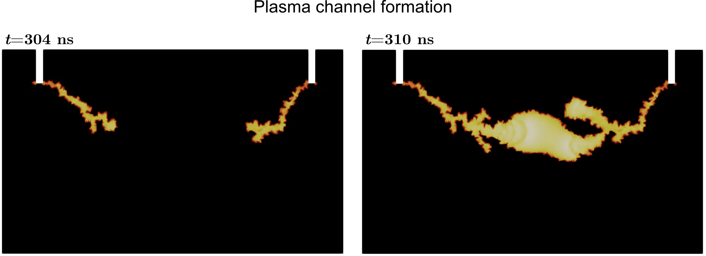
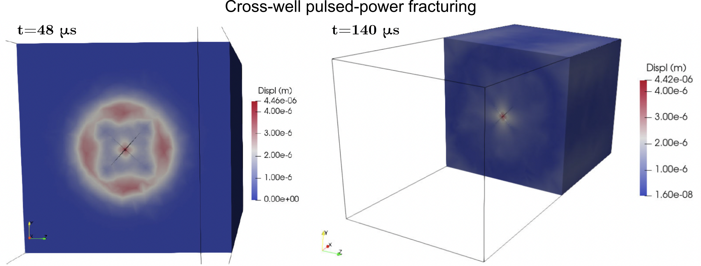
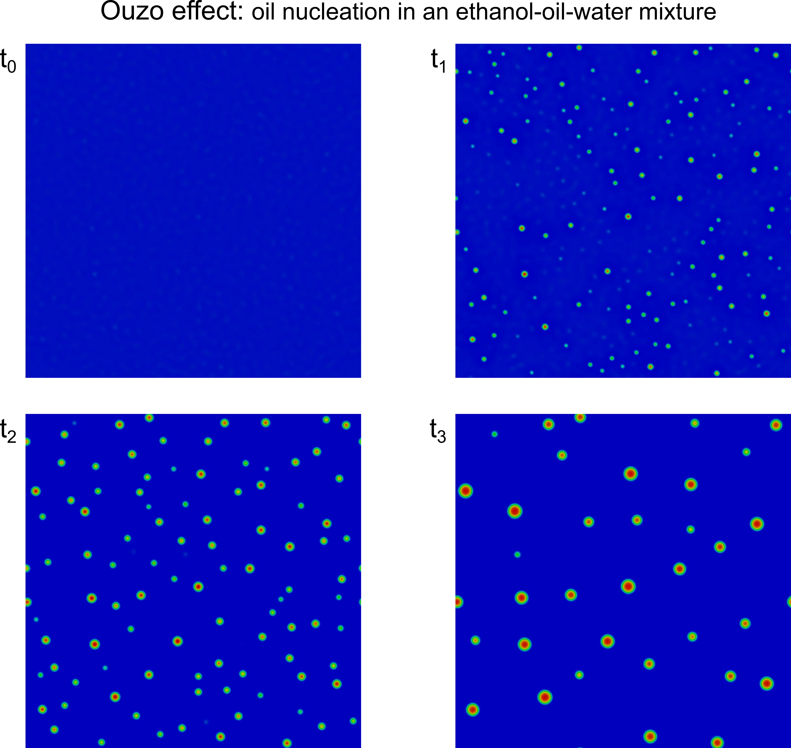
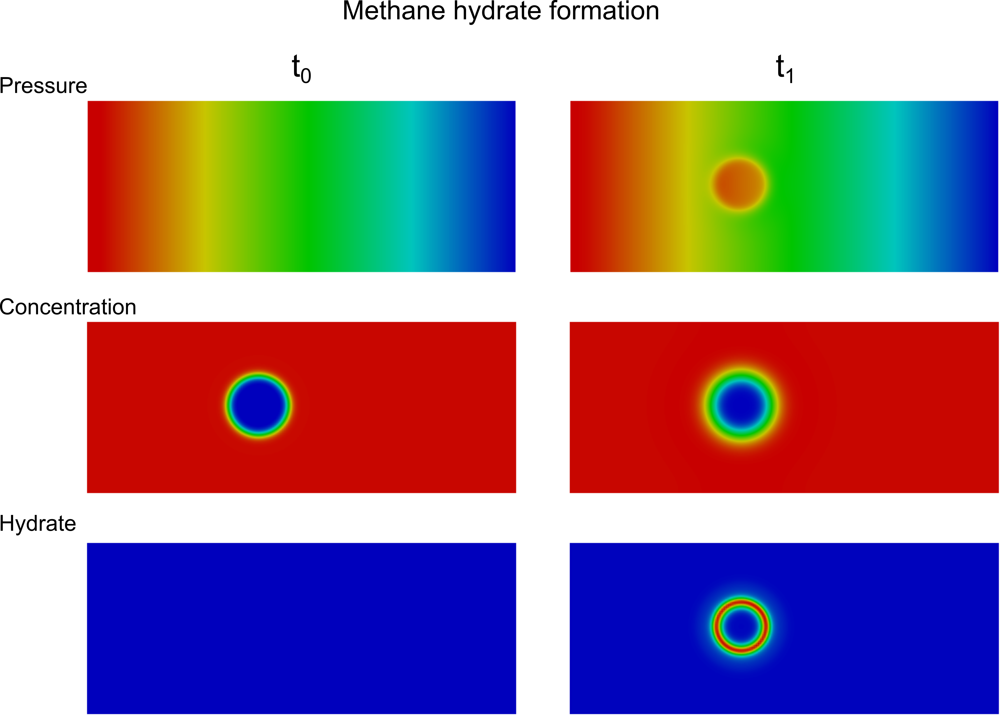
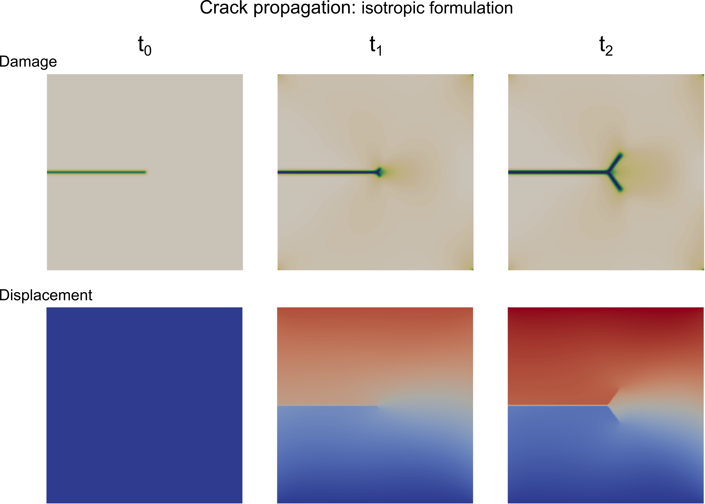
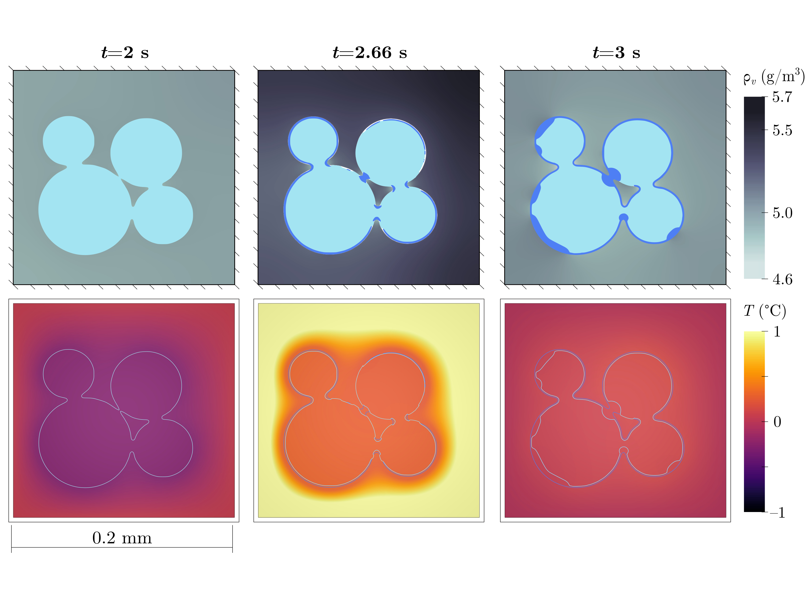
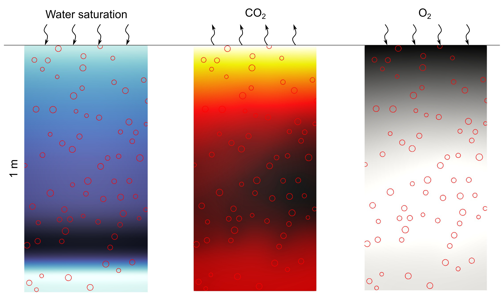
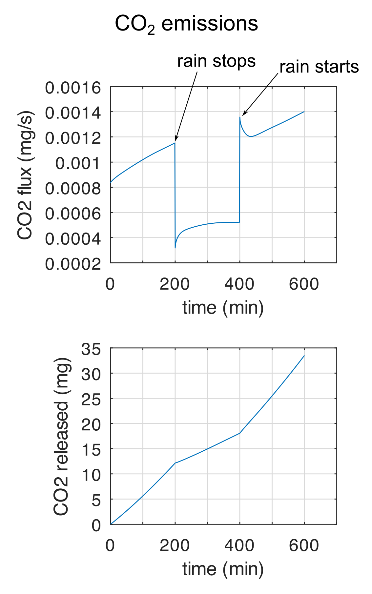
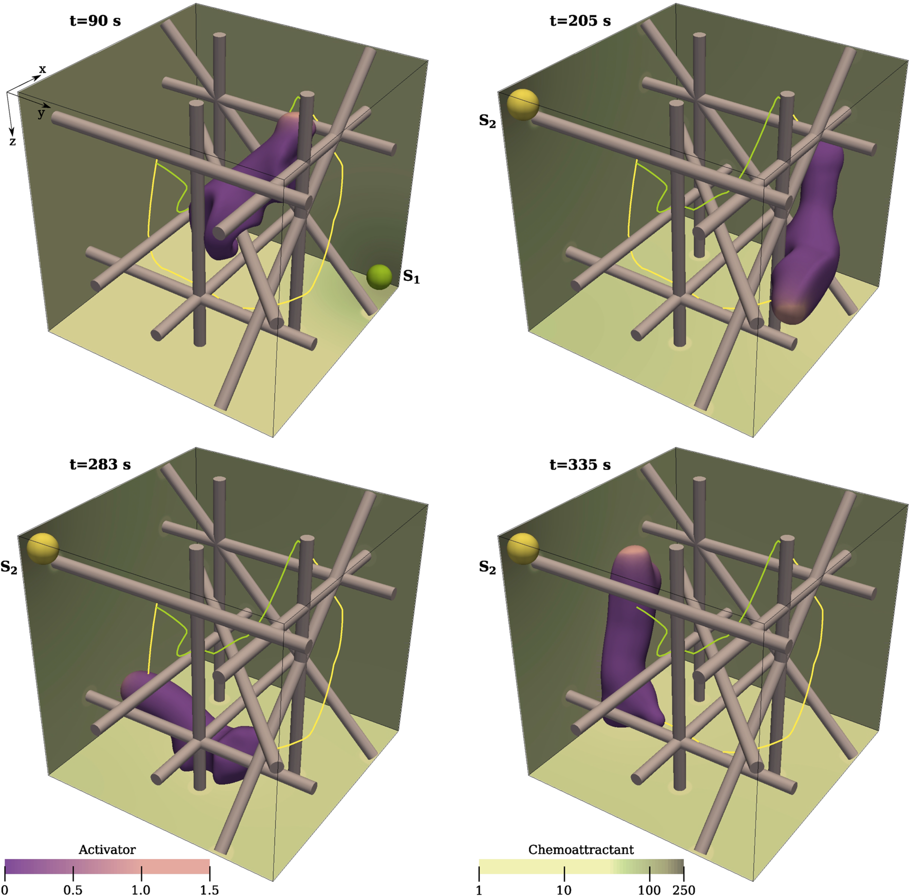
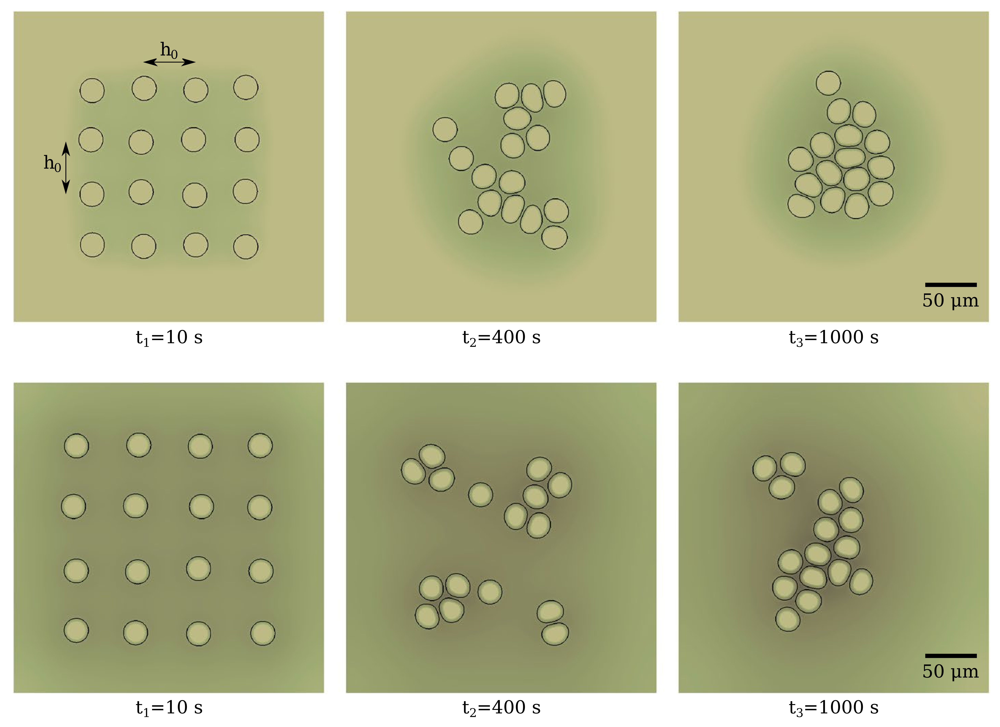

Subsurface electrical stimulation
I develop multiphysics simulators of rock electro-stimulation by pulsed power and Joule heating. The models cover plasma formation during a high-voltage pulse, electrical-to-mechanical energy conversion during shockwave generation, and dynamic rock fracturing. Left: dielectric breakdown. Right: pulsed-power fracturing (split-node method).


Multiphase flow
I developed phase-field formulations and numerical implementations for solidification of binary mixtures, phase separation of ternary mixtures, and methane hydrate formation and dissociation. Left: nucleation of oil microdroplets in an ethanol-oil-water mixture (Ouzo effect). Right: early methane hydrate formation.


Fracture dynamics
I model brittle fracture in elastic solids with a phase-field description of the crack, derived from a free-energy functional and coupled to fluid mass conservation to capture fluid-driven fracturing. The picture shows crack propagation in a single-edge notched shear test.

Snow hydrology
I model snow, a porous material composed of ice, liquid water, and air, at two scales: pore-scale phase transitions that reproduce snow metamorphism, and meter-scale meltwater infiltration that improves predictions for water-resource management. The picture shows vapor concentration, ice, liquid water, and temperature during a melting event.

Soil carbon
I develop a Darcy-scale reactive-transport model that couples biogeochemical processes to capture soil organic matter decomposition and gas generation, including water infiltration and soil heterogeneity. Left: water saturation, CO2, and O2 during a drainage event. Right: CO2 flux and accumulated release.


Cell migration
I use the phase-field method to model cell movement and deformation and localize biochemical reactions in the cell interior and membrane, studying individual and collective migration. Left: chemotaxis in a fibrous environment. Right: co-attraction in multicellular systems.


Cancer growth
I have studied angiogenesis, the tumor-induced growth of capillaries, and glioma growth, using the phase-field method to localize tumor cells, vasculature, and angiogenic factors in the brain geometry. The picture shows the evolution of normoxic tumor cell concentration.